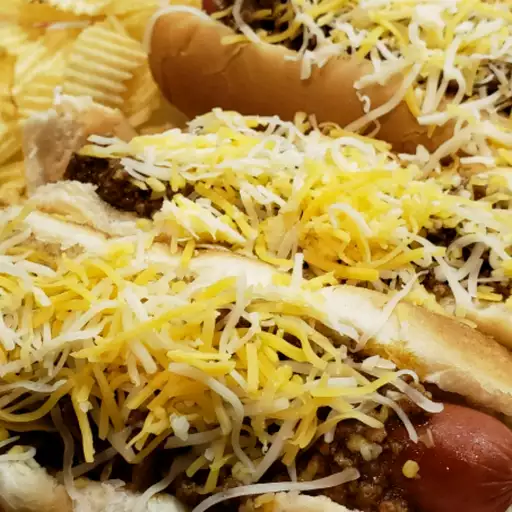

Hot Dog

Description:
This hot dog chili recipe took me many years to get just right! It reminds me of the chili I had as a kid.
Ingredients:
- 1 pound ground beef
- ⅓ cup water
- 5 ounces tomato sauce
- ½ cup ketchup
- 2 ½ teaspoons chili powder
- ½ teaspoon salt
- ½ teaspoon ground black pepper
- ½ teaspoon white sugar, or to taste
- ½ teaspoon onion powder
- 1 dash Worcestershire sauce
Steps
- Place ground beef and water in a large saucepan; use a potato masher to break apart beef.
- Stir in tomato sauce, ketchup, chili powder, salt, black pepper, sugar, onion powder, and Worcestershire sauce.
- Bring to a boil, then simmer over medium heat until beef is cooked and chili thickens, about 20 minutes.